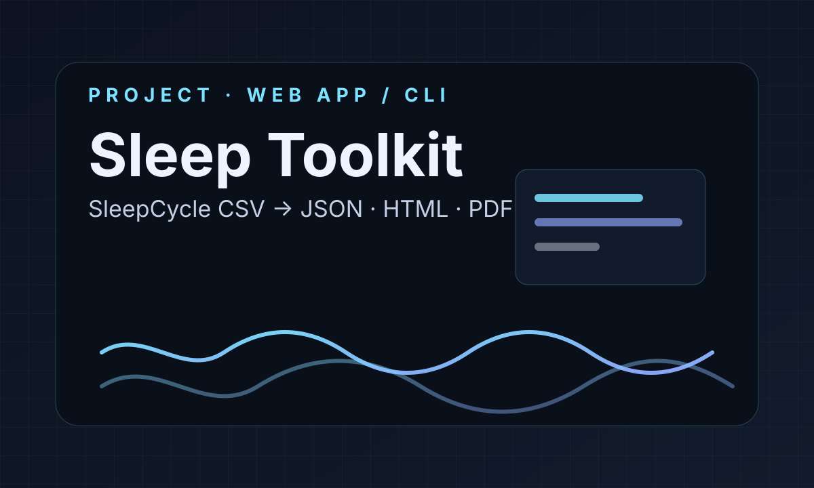

Sleep Toolkit
SleepCycle CSV analyzer · Web App / CLI
A maintained public tool for SleepCycle exports: upload a CSV and generate structured JSON, an interactive HTML report, and a PDF.
Open projectProjects
Projects
Independent project pages, data essays, and other standalone works that do not quite belong in the regular writing archive.

SleepCycle CSV analyzer · Web App / CLI
A maintained public tool for SleepCycle exports: upload a CSV and generate structured JSON, an interactive HTML report, and a PDF.
Open project